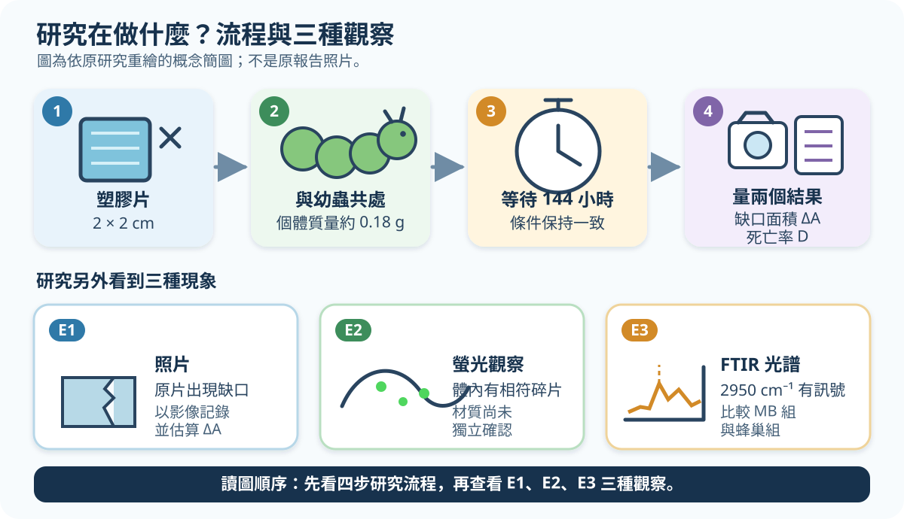

今日一題｜塑膠少了，就是被分解了嗎？
高一自然科／探究與實作｜建議 8–12 分鐘｜共 6 分｜可使用計算機
本題改編自第 65 屆全國中小學科學展覽會作品〈蟲塑未來—探討小蠟蛾幼蟲攝食塑膠之研究〉；作答不需另讀原報告。[1][4]

圖 1 依原研究重繪的概念簡圖；不是原報告照片。
表中的 ΔA 與非零死亡率在來源中以「約」呈現。本題直接使用下表數字，並把初始面積題定為 A₀ = 4.00 cm²。
| 材料 | ΔA（cm²） |
死亡率 D |
|---|---|---|
| MB（口罩過濾層） | 1.23 | 40% |
| EP（口罩內層） | 0.42 | 0% |
| HDPE（塑膠袋） | 0.56 | 20% |
| LLDPE+HDPE（垃圾袋） | 0.54 | 0% |
R = ΔA ÷ A₀ × 100%
R 取到 0.1%。選材規則：先排除 D > 10%，再從合格材料中選 R 最大者。
判讀用語：
- 物理碎裂：塑膠變小，但長鏈未必斷裂。
- 化學分解：須有長鏈斷裂的化學證據，例如平均分子量降低或出現可確認的新小分子。
- 完全且無害：還須交代全部物質去向及是否造成危害。
- FTIR：用紅外吸收特徵推測分子鍵的方法。
待評鑑主張 C：「MB 的減少面積最大，所以幼蟲已把 MB 完全化學分解成無害物質。」
問題
（一）計算後依規則決策（2 分）
- 列出所有合格材料（0.5 分）。
- 只替合格材料算
R，依表格順序列出（各 0.5 分，共 1 分）。 - 選出 1 種材料，並引用它的
D與R說明（0.5 分）。
（二）觀察能支持什麼？（2 分）
1. 針對主張 C，下列哪個判讀最嚴謹？單選。（1 分）
- (A) E1 已證明所有缺少的塑膠都進入幼蟲體內。
- (B) E2 已證明聚合物長鏈在幼蟲體內斷裂。
- (C) E1 可由脫落／碎裂解釋；E2 即使是塑膠，也可能是未斷鏈碎片，所以兩者都不能單獨證明化學分解。
- (D) E1、E2 合起來已證明產物完全且無害。
2. E3 的 2950 cm⁻¹ 訊號還可能來自什麼？提出 1 個替代來源（0.5 分）。再提出 1 個無害性測試，寫出「測量結果」與「比較對象」（0.5 分）。
（三）判讀命題改編的確認性實驗（2 分）
以下是假想實驗，不是原科展已做過的程序。失活基質是同批萃取液加熱後使候選酵素失去活性；載液是溶解酵素的液體。三組使用同批 MB、相同條件並獨立重複；差異大於量測不確定度。
| 組別 | 處理 | 小碎片 | 平均分子量（初始＝100%） | MB 來源新小分子 |
|---|---|---|---|---|
| A | 失活基質＋載液＋活性候選酵素 | 增加 | 62% | 檢出 |
| B | 失活基質＋載液 | 無明顯增加 | 99% | 未檢出 |
| C | 緩衝液 | 無明顯增加 | 100% | 未檢出 |
- 為何判斷酵素效應時應主要比較 A 與 B，而不能只比 A 與 C？再用兩個化學欄位寫出因果結論（1 分）。
- 另一實驗只有「小碎片增加、可回收固體質量下降」，但兩個化學欄位都和對照相同；回收量只計
≥ 5 μm固體，未計< 5 μm顆粒。這是否支持「長鏈已斷裂」？請引用兩欄說明。為何質量下降仍不能單獨證明化學分解？（1 分）
作答與安全
- 第（一）若算錯，但後續一致套用規則，仍可給方法分。
- 本題只做紙筆判讀；延伸實作須由合格實驗室操作，含塑膠碎片液體不得排入水槽。
Sources
[1] https://twsf.ntsec.gov.tw/activity/race-1/65/senior.html — 第65屆高級中等學校組
[4] https://twsf.ntsec.gov.tw/activity/race-1/65/pdf/NPHSF2025-052016.pdf — 蟲塑未來—探討小蠟蛾幼蟲攝食塑膠之研究